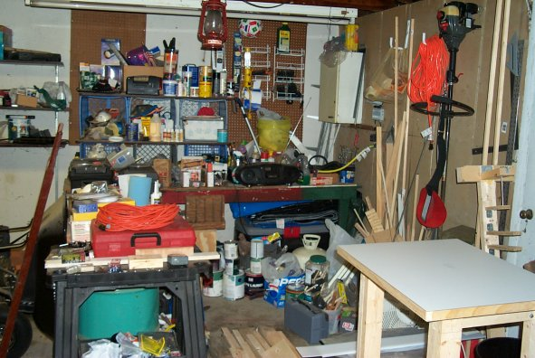
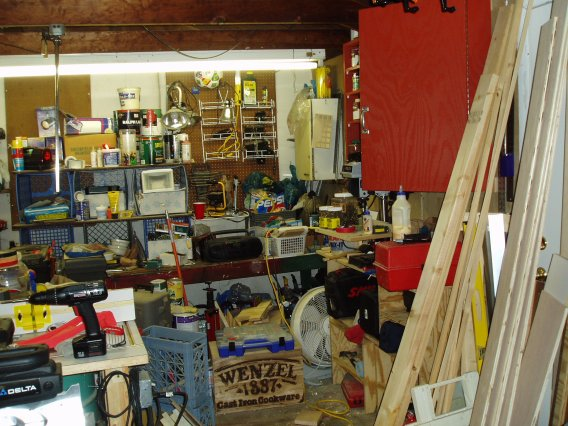
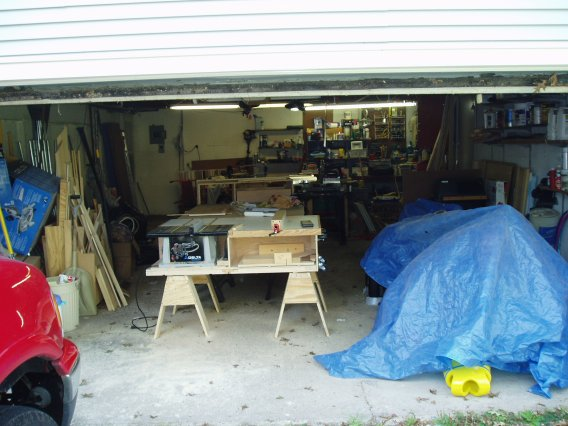
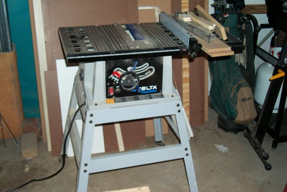
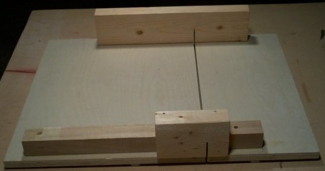
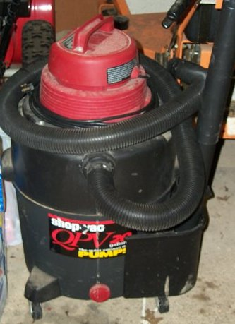

ThunderEagle's Nest

First, my Shop circa August, 2003.

Now, same corner, September, 2004

It is both, more organized, and more cluttered. Amazing how that works. I'm getting to it. My plans for that space is to eventually build a new workbench that will stick out on the left from that existing bench on the back wall. This will give me some underneath storage for some of that crap on the ground now. It will also be longer than the bench that is there (hidden by my router table and the junk on top of the bench). It is currently just a top on two steel barrels, witch take up all the underneath space, very ineffiecent storage.
Then I will get a rolling cabinet for that Drill Press to free up the other small workbench on the right. Then I will finally build some storage/shelving on that back wall to hold all that other stuff piling up. This is assuming we still live in the house, as we are currently looking to move into a different School District (6 year old Daugher in First grade, and a 4 year old son who will start Kindergarden next year).
Here is a scary shot of the whole garage.

Under that blue tarp are children's toys. To the left is a buch of stuff that we though might go to a garage sale, but it never happened and then got buried as I moved some stuff to the other side of the garage while I was working. It will get cleaned out at some point so my wife can park in the garage this winter, I don't woodwork once it gets cold anyhow, my only available heat out there is a Kerosene heater.
Here is my Delta TS200LS Table Saw.

Sure, not the greatest saw in the world, but it is working for me so far. I have added an extension wing as without it, I could barely make a 10" rip and now I'm out to about 17". The mitre gauge is slop and has a smaller non-standard T-Slot. Dimpling the runner helped, but did not completly take out the slop, however when I need to use my mitre gauge affixing a piece of masking tape to the runner makes it fit snug in the slot for much more accuracy. You can see there the blade guard off to the side, and that is because I use a Crosscut sled most of the time and the guard will not work with it. As a result, unless I'm ripping an especially small piece, I end up never putting the guard back on the saw.
 Here is the CC Sled. If you have not put one of these together, do it right away.
This has improved the cuts I have made on this saw 400%. This is a $99 saw, I doubt I'll be running tons of Cherry, Oak or Mahogany through it, or making fine furniture. However, I am learning each time I use it, and had it not been for the availability of a cheapo saw like this, I would have never gone past the notion of "I could build some of these things" as I would have not wanted to drop $400 bucks, or even $200 probably and then find out I didn't care for it. In this house I will probably never have a cabinet saw, but I would hope I can upgrade to a contractor's saw in short to medium term.
Lets not forget Dust Collection. :) 